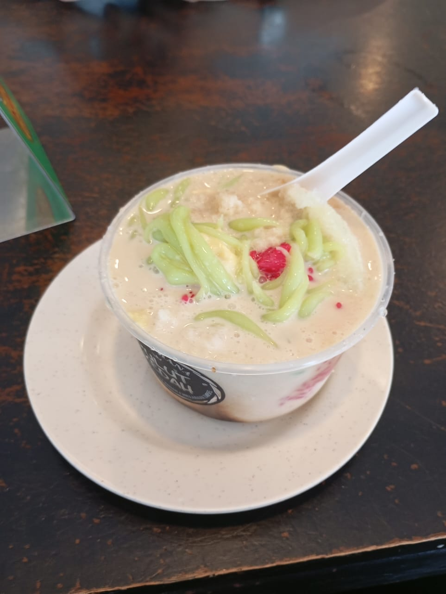

Nasi Goreng Kampung
Nasi goreng kampung is my favorite food because it's smoky, spicy, rustic, comforting, flavorful, unforgettable, affordable, filling, consistent, and always satisfying every single time.
A little love letter to the dishes I can't live without
Nasi goreng kampung is my favorite food because it's smoky, spicy, rustic, comforting, flavorful, unforgettable, affordable, filling, consistent, and always satisfying every single time.

Cendol quickly became my favorite dessert. The shaved ice is refreshing, the coconut milk creamy, the gula melaka rich, and the chewy green jelly makes every bowl consistently enjoyable.

Chicken chop is my favorite meal. The portion is generous, the meat tender, the gravy flavorful, and the sides always make it a reliable, satisfying choice. The crispy coating adds texture, the vegetables balance the plate, and the price is reasonable for the quality. It's consistently enjoyable, filling, and a dependable option whenever I want comfort food.